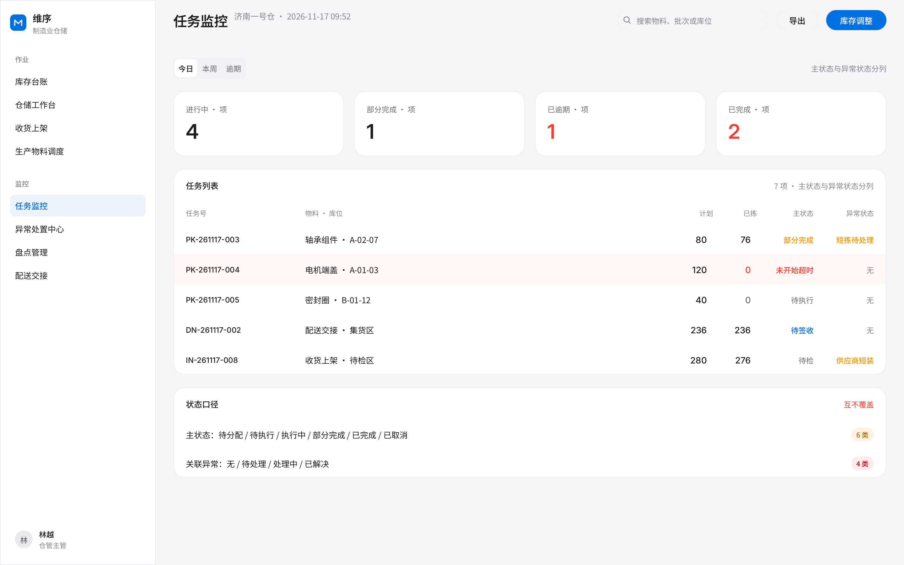
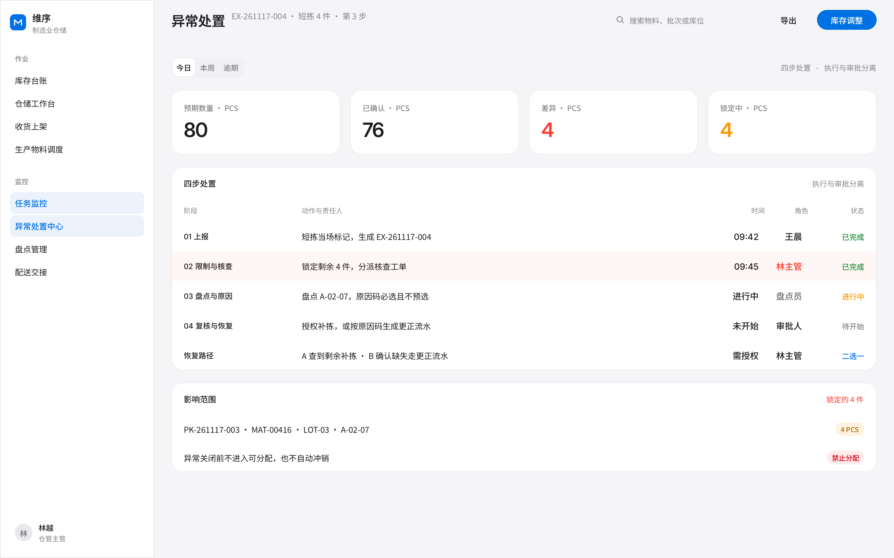
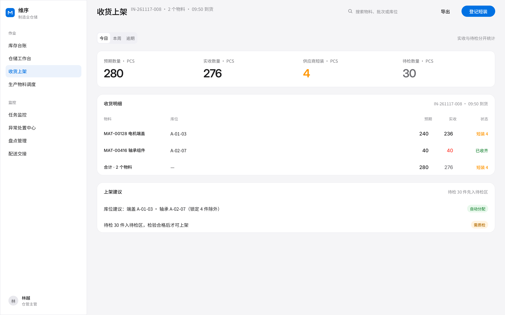
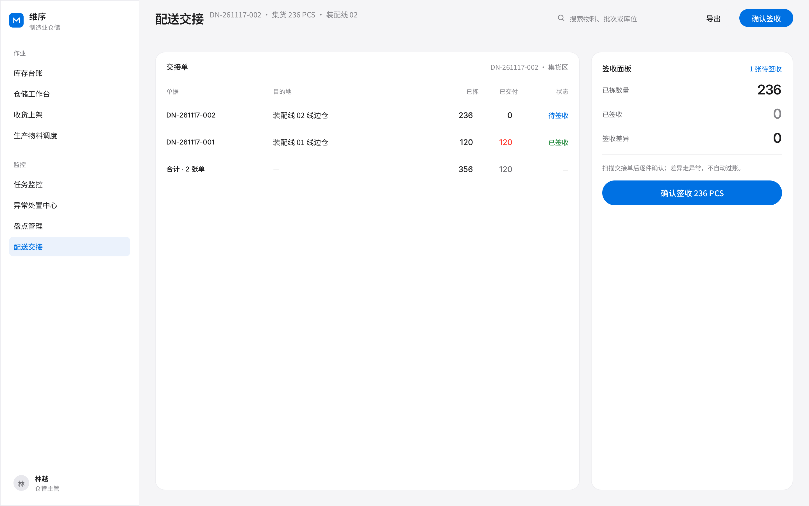
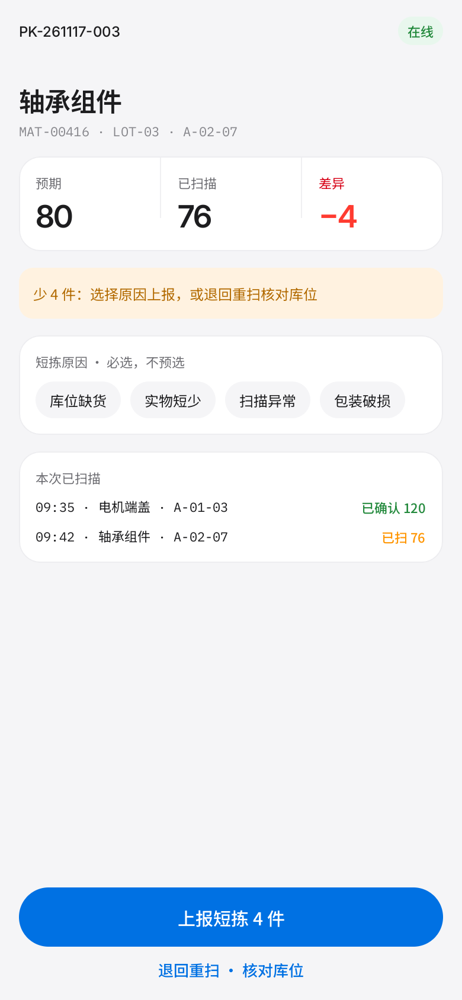
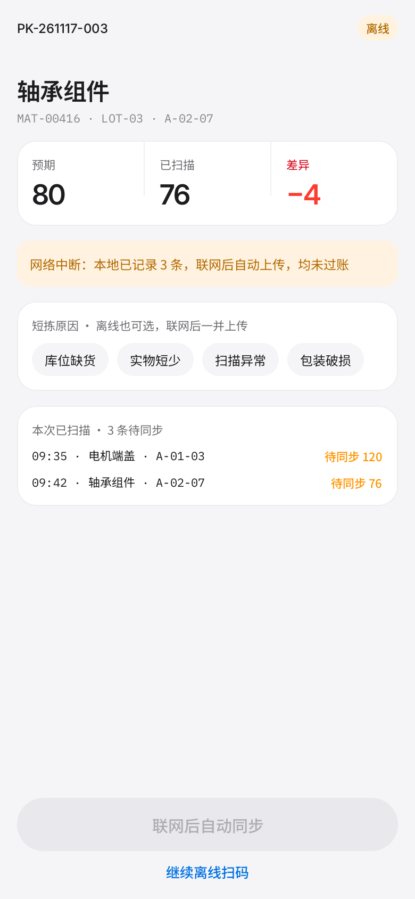
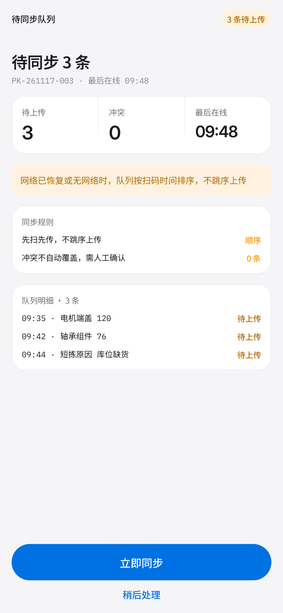
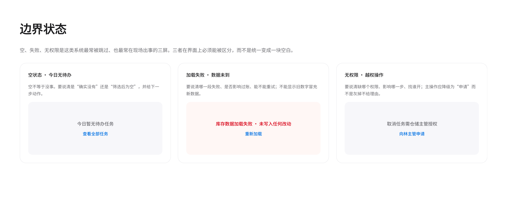

← 返回全部作品
B端产品
维序 WEISU
4 件差异，跟着任务走
制造业仓储的 PC + PDA 概念设计。用一条能跑通的业务链——要 240 件、拣出 236、短拣 4 件——把库存口径、任务状态和异常处置串起来。概念稿，没下过仓库。
11 张界面：PC 管全局，PDA 管手上这一步
管理端看库存、任务和异常，现场端只看当前这一扫。









同一个数字，三个说法
要 240 件、拣出 236、差 4 件。说不清这 4 件归谁，下一班还得再吵一遍。
案例跟着一条任务走：MO-261117-021 要 240 件，王晨在 PDA 上拣到轴承组件时是 76 / 80，短拣 4 件，生成异常 EX-261117-004，核查之后才进配送交接。
一个公式：同一件货只扣一次
实物、预留、核查锁定、待检、可分配，这五个词得先定死。
可分配 = max(0, 实物 − 并集(有效预留, 核查锁定, 已拣待交接))。实物 100、预留 60，其中 40 件同时被核查锁定，并集还是 60，可分配是 40。按相加算会得到 0，等于把库存清了零。
从要货到交接，4 件差异一直在链上
调度、监控、扫码、异常、恢复、交接，每一步都落到一个具体页面。
- 09:15 齐套核对，可分配 240。
- 09:42 轴承组件 76 / 80，短拣 4 件。
- 异常核查完，才进入配送交接 DN-261117-002。
先看得清、扫得准，再谈好看
工业软件在密度和可读性之间取舍，我选的是少让人看错。
- 正文和表格默认 14px，数字等宽右对齐，行高 48。
- 导航压暗一点，不跟表格抢注意力。
- 连续扫码时，提示别挡住下一行。
短拣 4 件，四步走完
上报、限制剩余 4 件再分配并派核查、盘点和原因确认、复核后恢复或更正。执行的人和批的人分开。
- 查到剩下 4 件，就放开限制补拣，再进配送交接。
- 确认缺失，走授权、按原因码记差异、生成更正流水。
- 两条路都不许直接把异常点成「已解决」就完事。
12 组组件，34 个变体
是可编辑的 Figma 组件，不是画好的图。
组件全用绝对定位，没上 Auto Layout。这一点写在交付说明里，算没做完，不算完成项。
没下过仓库，所以不写效率提升
现在只有设计检查，没有真实用户测试；仓库现场的访谈和试用都还没做。
- 待验证：5 秒内能不能找到主任务，不看颜色能不能读懂状态。
- 待验证：PDA 真机尺寸、戴手套操作、扫描提示方式。
- 待确认的业务口径：超时算 30 还是 60 分钟、盘点范围、实盘 0 怎么理解。
返修一轮，把六处对不上的地方改齐
自查时发现六处「看起来对、其实对不上」，比如同一个库位编码两种写法，一批改到一致。
 Homie · 一句话之后，老人要看得懂
Homie · 一句话之后，老人要看得懂 智审 · AI 指出来，人来核
智审 · AI 指出来，人来核